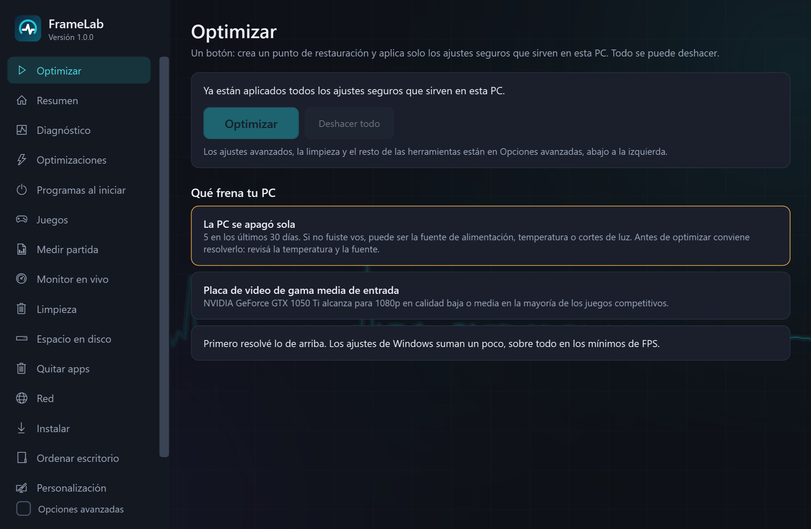
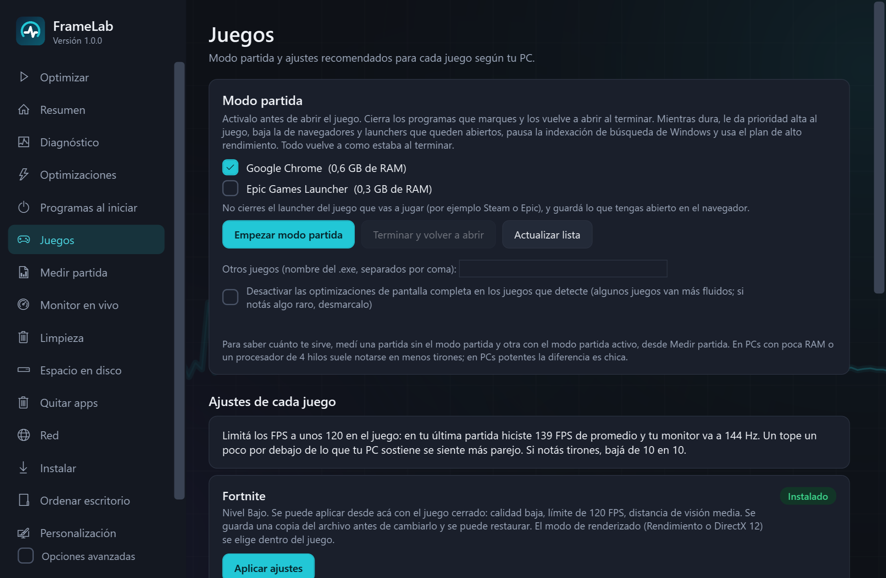
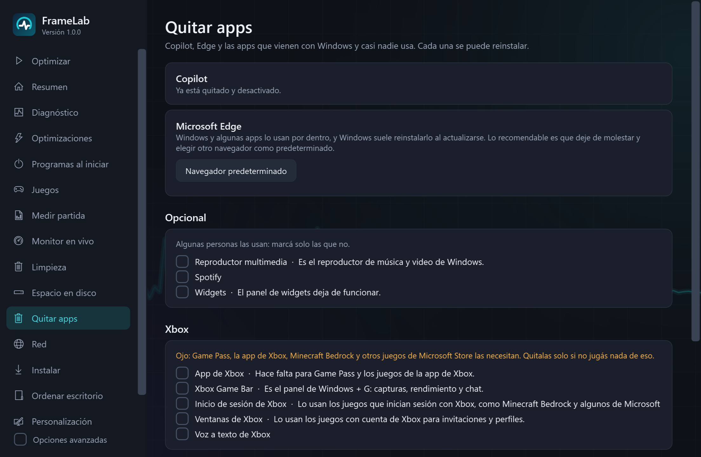
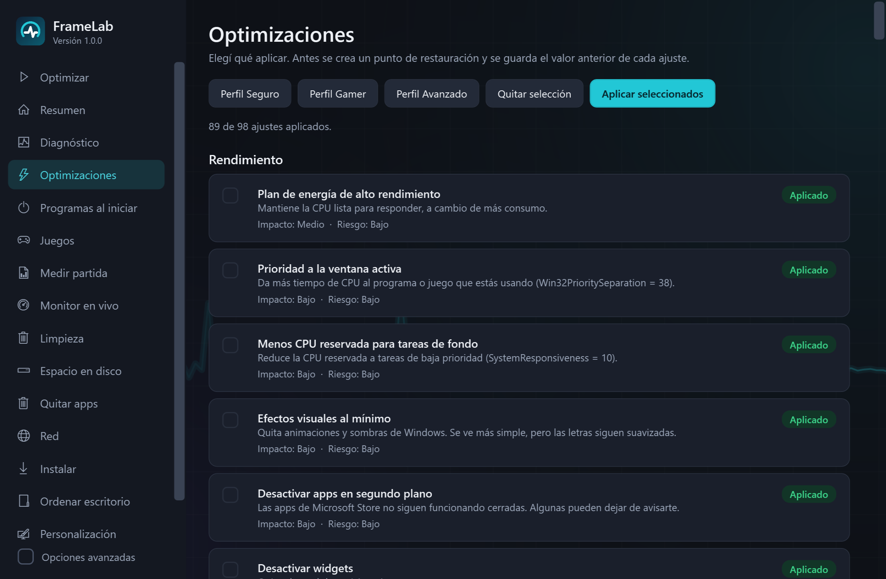
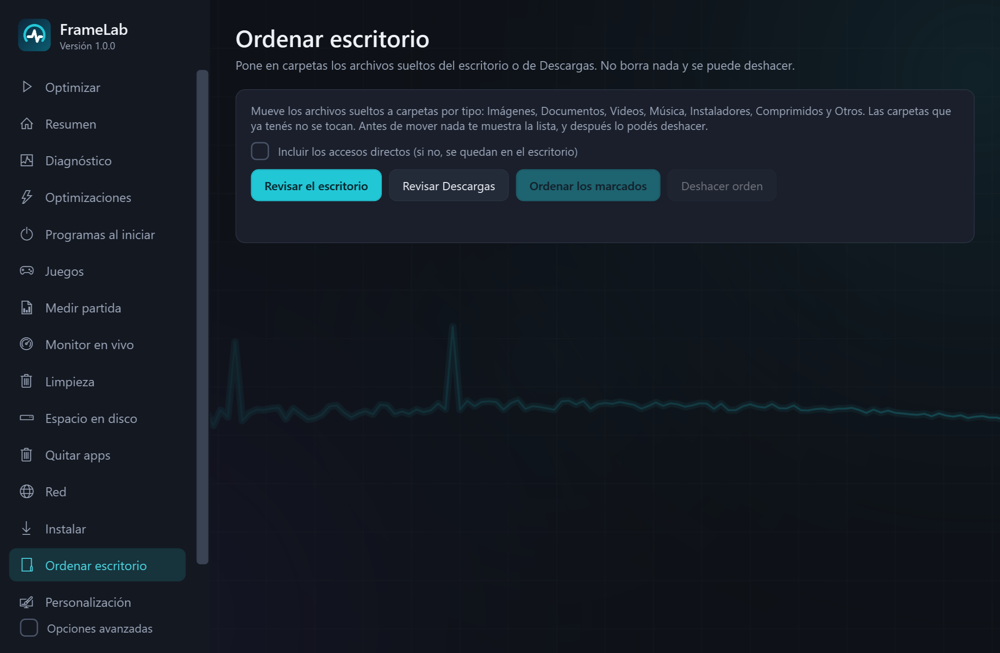
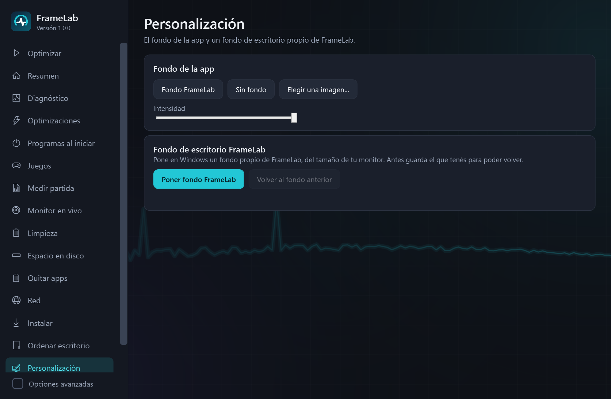

Tu PC lista para jugar, con un botón. Y si no te gusta, la volvés atrás.
FrameLab te dice qué frena tu PC, aplica solo ajustes seguros, saca lo que Windows trae y no usás, y mide tus partidas para que veas si de verdad mejoró.
Descargar para WindowsCómo se usa
Cómo se usa, en 3 pasos
No hace falta saber de Windows. Lo avanzado está escondido hasta que lo pidas.
Descargá y abrí
Un solo archivo, FrameLab.exe. Aceptá el permiso de administrador.
Tocá Optimizar
Crea un punto de restauración y aplica solo los ajustes seguros que sirven en tu PC.
Reiniciá y jugá
Si algo no te gusta, tocá Deshacer todo y queda como estaba.
Todo lo que hace
Cada cambio dice qué hace, cuánto ayuda y qué riesgo tiene, y se puede deshacer.
Qué frena tu PC
Ordena lo que más limita tus juegos: placa de video, disco lleno, RAM, procesador, drivers, apagados o programas al iniciar. Si los ajustes de Windows van a ayudar poco, te lo dice.
102 ajustes reversibles
Rendimiento, juegos, energía, privacidad y servicios, en tres perfiles: Seguro, Gamer y Avanzado. Los que no sirven en tu PC aparecen como "No aplica".
Modo partidaNUEVO
Cierra lo que elijas antes de jugar, le da prioridad al juego y al terminar deja todo como estaba.
Quitar apps de WindowsNUEVO
Copilot, promociones y apps que casi nadie usa. Edge deja de molestar. Cada app se puede reinstalar.
Tus juegos, configurados
Ajusta Fortnite, Roblox y Minecraft desde sus archivos oficiales, con copia para volver atrás. Para Valorant y CS2 te da una guía.
Medí tus partidas
FPS, mínimos y tirones, con una explicación de qué los causa y una comparación de antes y después.
Ordenar escritorioNUEVO
Pone los archivos sueltos del escritorio o de Descargas en carpetas por tipo. Te muestra la lista antes y se puede deshacer.
Espacio y limpieza
Muestra qué juegos y carpetas ocupan más y libera espacio sin riesgo. No borra la caché de sombreadores.
Fondo FrameLabNUEVO
Un fondo propio para la app y para el escritorio, a la resolución de tu monitor, con botón para volver al anterior.

Modo partida
Activalo antes de abrir el juego. Mientras dura:
- Cierra los programas que marques (navegador, Discord, launchers) y los vuelve a abrir al terminar.
- Prioridad alta para el juego y baja para lo que queda abierto.
- Pausa la búsqueda de Windows y usa el plan de alto rendimiento.
- Todo vuelve a como estaba, aunque la app se cierre de golpe.
No toca procesos de Windows ni antitrampas. Se nota más en PCs con poca RAM o procesadores de 4 hilos.




Sin humo
No prometemos "+200 % FPS": depende de cada PC, y por eso la app lo mide. Si tu placa de video es lo que limita, te lo dice y te sugiere qué cambiar, en lugar de venderte ajustes que no sirven.
Lo que sí hace
- Punto de restauración antes de cambiar nada
- Guarda cada valor anterior para revertir
- Si un ajuste falla, lo deshace solo
- Funciona en Windows 10 y 11
Lo que nunca va a hacer
- Limpiadores de RAM
- Desactivar Defender o SmartScreen
- Desactivar las actualizaciones para siempre
- Quitar el archivo de paginación
- Drivers de páginas no oficiales
- Tocar juegos con antitrampas
Preguntas frecuentes
¿Se actualiza sola?
Sí. En Acerca de, "Buscar actualizaciones" te avisa si hay una versión nueva y la instala con un clic, sin perder tus ajustes ni las copias para deshacer.
Medí una partida y me dio números raros
Dejá el juego en primer plano mientras mide. Desde la versión 1.0.3 se descuentan las pausas y las cargas del principio y del final, y te avisa si algo tapó el juego, como un alt-tab o el overlay de Discord.
Encontré un error
Tocá "Reportar un problema" en Acerca de, o entrá a este formulario en español. Contá qué pasó y lo arreglamos.
¿Es seguro?
Antes de cambiar algo crea un punto de restauración y guarda cada valor anterior. No desactiva el antivirus ni las actualizaciones, y no toca juegos con antitrampas.
Descargar
Descargá FrameLab.exe desde la página de versiones, abrilo y aceptá el permiso de administrador: lo pide porque cambia ajustes de Windows. Antes de aplicar nada crea un punto de restauración.
Si Windows muestra "Windows protegió su PC", tocá Más información y después Ejecutar de todas formas. Aparece porque la app todavía no tiene firma digital.